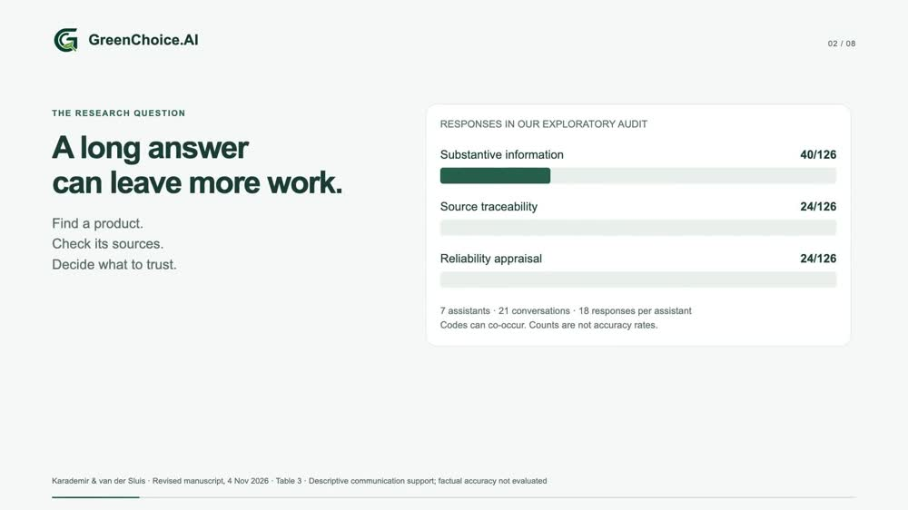
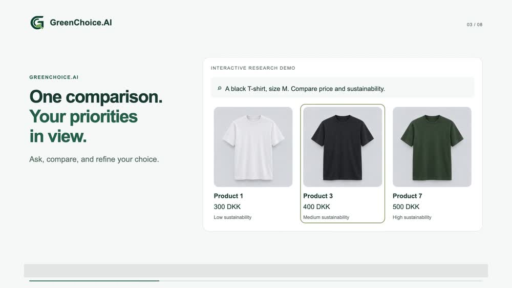
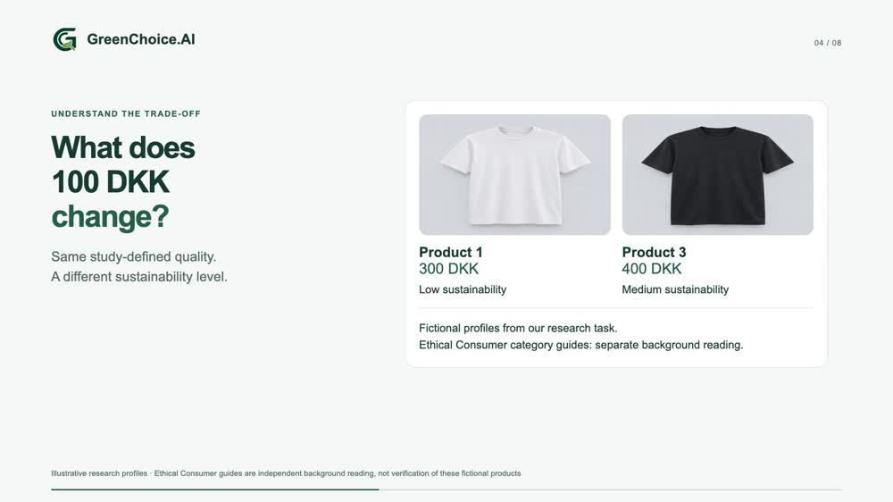

Research and product development · University of Copenhagen
GreenChoice.AI
A shopping assistant that helps people compare options around their own priorities and see the evidence behind a recommendation.
I co-develop the chatbot and website with Dr. Frans van der Sluis. I work on deployment, analytics and formative user testing. I helped revise the funding proposal and delivered the pitch. The project received DKK 150,000 in UCPH Lighthouse proof-of-concept funding.
Read the research behind the prototypeSee a shopping comparison
Open the demo video · 1 min 41 sec
Three moments from the demo

A long recommendation can leave shoppers checking sources and comparing products themselves.

The example starts with a request for a T-shirt and a comparison across price, quality and sustainability.

In this fictional catalogue, the 100 DKK difference changes the study-defined sustainability level while quality stays the same.